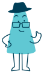

Observatorio de Centros de Estudiantes
Medimos, comparamos y hacemos visible la calidad de los centros de estudiantes del Paraguay. Datos abiertos para que la representación estudiantil rinda cuentas.
El observatorio
MirarCE nace para responder una pregunta simple: ¿qué tan democráticos, transparentes y representativos son los centros de estudiantes? Recogemos información de cada centro, la puntuamos con criterios públicos y la publicamos para que estudiantes, autoridades y la ciudadanía puedan compararla.
Cómo evaluamos
Cada centro recibe un puntaje sobre 100, distribuido entre siete dimensiones. La participación democrática pesa más que cualquier otra.
Metodología
No usamos fórmulas ocultas. Cada indicador tiene un puntaje definido y verificable. Donde falta información, lo decimos: un dato vacío no es un cero, es una pregunta pendiente.